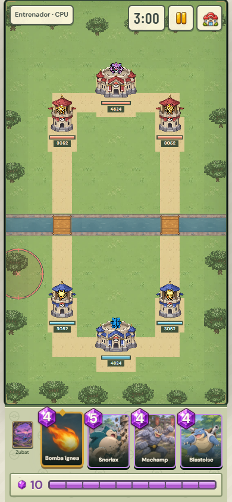
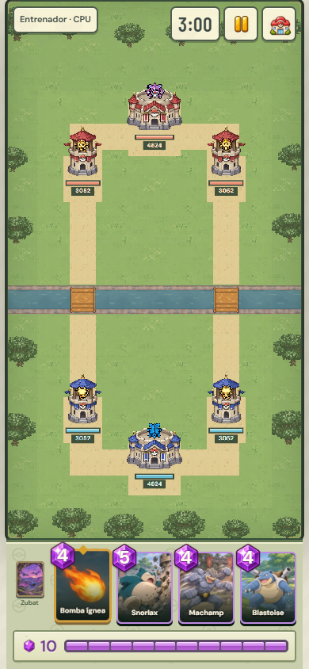

El puntero pasa del área válida al margen del canvas. Antes se dibujaban dos diagonales; en 5af8a6d no queda X ni área. Salir del canvas HTML y Escape también limpian.
Causa, medición y límites · Antes · Después


App local y commits inmutables; no es una nueva prueba de producción. El probe sintético de inside:false también queda limpio. No hubo cast ni cambios físicos.